纵观第二章、回归分析的Scala，到第六章、推荐系统的Scala，我们通过现实生活中的例子了解到了线性的和经典的机器学习 ( ML )算法。在本章中，我们将解释深度学习 ( DL )的一些基本概念。我们将从DL开始，它是ML的新兴分支之一。我们将简要讨论一些最著名和广泛使用的神经网络架构和DL框架和库。
最后，我们将使用长短期记忆 ( LSTM )架构，从癌症基因组图谱 ( TCGA )精选的非常高维的数据集进行癌症类型分类。本章将涵盖以下主题:
确保在您的机器上安装并配置了Scala 2.11.x和Java 1.8.x。
这几章的代码文件可以在GitHub上找到:
看看下面的视频，看看代码是如何运行的:
http://bit.ly/2vwrxzb
用于小规模数据分析的简单ML方法不再有效，因为ML方法的有效性随着大型和高维数据集而降低。接下来是DL——ML的一个分支，它基于一组算法，试图对数据中的高级抽象进行建模。Ian Goodfellow 等人(深度学习，麻省理工学院出版社，2016)对DL的定义如下:
与ML模型类似，DL模型也接受输入 X ，并从中学习高级抽象或模式以预测输出 Y 。例如，基于过去一周的股票价格，DL模型可以预测第二天的股票价格。当对这样的历史股票数据执行训练时，DL模型试图最小化预测值和实际值之间的差异。通过这种方式，DL模型试图对以前没有见过的输入进行归纳，并对测试数据进行预测。
现在，你可能想知道，如果一个ML模型可以做同样的任务，为什么我们需要DL来做这个？嗯，DL模型往往在处理大量数据时表现良好，而旧的ML模型在某个点之后就停止了改进。DL的核心概念受到大脑结构和功能的启发，被称为人工神经网络 ( ANNs )。作为数字逻辑的核心，人工神经网络帮助你学习输入和输出之间的关联，以便做出更稳健和准确的预测。但是，DL不仅仅局限于ANNs有许多理论上的进步、软件栈和硬件改进将DL带给了大众。我们来看一个例子；假设我们想要开发一个预测分析模型，比如动物识别器，我们的系统必须解决两个问题:
如果我们使用典型的ML方法来解决第一个问题，我们必须定义面部特征(耳朵、眼睛、胡须等)并编写一个方法来确定在对特定动物进行分类时哪些特征(通常是非线性的)更重要。
然而，与此同时，我们不能解决第二个问题，因为用于聚类图像的经典ML算法(例如k-means)不能处理非线性特征。看看下面的图表，它显示了一个工作流程，如果给定的图像是一只猫，我们是否想要分类，我们将遵循这个流程:
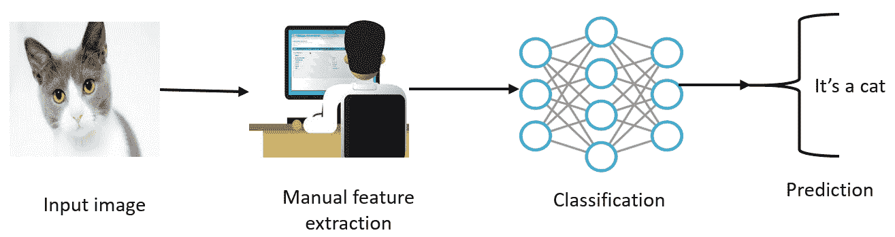
DL算法将这两个问题更进一步，在确定哪些特征对于分类或聚类最重要之后，将自动提取最重要的特征。相反，当使用经典的ML算法时，我们必须手动提供这些特征。
DL算法将采取更复杂的步骤。例如，首先，它会在聚类猫或狗时识别最相关的边。然后，它会尝试找到各种形状和边缘的分层组合。这一步称为提取、转换和加载 ( ETL )。然后经过几次迭代，复杂概念和特征的层次识别将被执行。然后，基于所识别的特征，DL算法将决定这些特征中的哪些对于分类动物是最重要的。这一步被称为特征提取。最后，它将取出标签列，并使用自动编码器 ( AEs )执行无监督训练，以提取要重新分配给k-means进行聚类的潜在特征。然后，聚类分配硬化损失 ( CAH损失)和重建损失朝着最优聚类分配联合优化。
然而，在实践中，DL算法被提供了原始图像表示，它看不到我们所看到的图像，因为它只知道每个像素的位置及其颜色。图像被分成不同的分析层。在较低层次上，软件分析例如几个像素的网格，任务是检测一种颜色或各种细微差别。如果它发现了什么，它就通知下一级，下一级在这一点上检查给定的颜色是否属于一个更大的形式，比如一条线。
该过程继续到更高的级别，直到算法理解下图所示的内容:
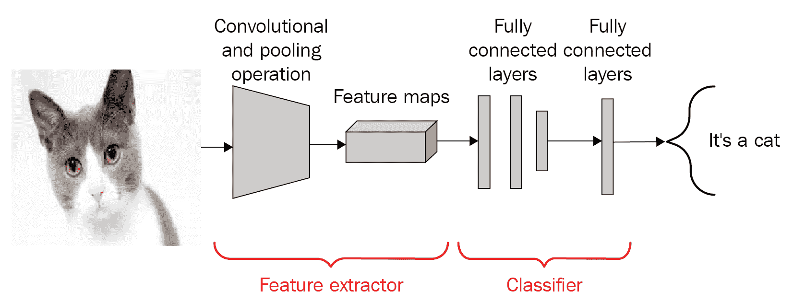
虽然狗对猫是一个非常简单的分类器的例子，但能够做这些类型事情的软件现在已经很普遍，可以在识别人脸的系统中找到，或者在谷歌上搜索图像的系统中找到。这种软件是基于DL算法的。相反，通过使用线性ML算法，我们不能构建这样的应用，因为这些算法不能处理非线性图像特征。
此外，使用ML方法，我们通常只处理几个超参数。然而，当神经网络参与进来时，事情就变得太复杂了。在每一层中，都有数百万甚至数十亿个超参数需要调整——数量如此之多，以至于成本函数变得非凸。另一个原因是隐藏层中使用的激活函数是非线性的，因此成本是非凸的。
受人脑工作方式启发的人工神经网络构成了深度学习及其真正实现的核心。如果没有人工神经网络，今天围绕深度学习的革命是不可能的。因此，为了理解DL，我们需要理解神经网络是如何工作的。
ann代表了人类神经系统的一个方面，以及神经系统是如何由许多使用轴突相互通信的神经元组成的。感受器接收来自内部或外部世界的刺激。然后，它们将这些信息传递给生物神经元进行进一步处理。
除了称为轴突的另一个长延伸外，还有许多树突。在其末端，有被称为突触末端的微小结构，用于将一个神经元连接到其他神经元的树突。生物神经元从其他神经元接收被称为信号的短电脉冲，作为响应，它们触发自己的信号。
因此，我们可以总结出，神经元包括一个细胞体(也称为胞体)，一个或多个用于接收来自其他神经元的信号的树突，以及一个用于执行神经元产生的信号的轴突。当一个神经元向其他神经元发送信号时，它就处于活跃状态。然而，当它从其他神经元接收信号时，它处于非活动状态。在空闲状态下，神经元在达到某个激活阈值之前积累所有接收到的信号。这一切促使研究人员测试人工神经网络。
ann和DL中最重要的进展可以用下面的时间表来描述。我们已经看到人工神经元和感知机分别在1943年和1958年是如何提供基础的。然后，异或在1969年由明斯基等人公式化为线性不可分问题，但后来在1974年，沃博斯等人。演示了训练感知器的反向传播算法。
然而，最重大的进步发生在20世纪80年代，当时约翰·霍普菲尔德等人于1982年提出了霍普菲尔德网络。然后，神经网络和DL的教父之一，辛顿和他的团队在1985年提出了玻尔兹曼机器。然而，可能最重要的进步之一发生在1986年，当时Hinton 等人成功训练了MLP和Jordan 等人提出的RNNs。同年，Smolensky 等人也提出了玻尔兹曼机的改进版本，称为限制玻尔兹曼机 ( RBM )。
但在90年代，最有意义的一年是1997年，1990年Lecun et al. 提出LeNet，1997年Jordan et al. 提出递归神经网络。同年，Schuster 等人提出了LSTM的改进版本和原RNN的改进版本，称为双向RNN。以下时间线简要介绍了不同神经网络架构的历史:
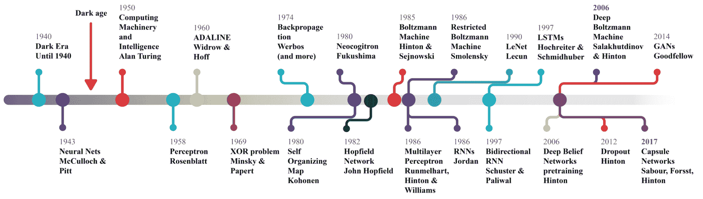
尽管从1997年到2005年，计算技术取得了重大进步，但我们并没有经历太多的进步，直到辛顿在2006年再次出击，他和他的团队通过堆叠多个RBM提出了深度信念网络 ( DBN )。然后，在2012年，Hinton发明了dropout，它显著改善了深度神经网络中的正则化和过拟合。
之后，Ian Goodfellow 等人推出了GANs，这是图像识别的一个重大里程碑。2017年，Hinton提出了CapsNet，以克服常规CNN的限制，这是迄今为止最重要的里程碑之一。
基于生物神经元的概念，出现了人工神经网络的概念。类似于生物神经元，人工神经元由以下部分组成:
除了神经元的状态，突触权重也被考虑，它影响网络内的连接。每个权重都有一个用 W ij 表示的数值，这个数值就是连接神经元 i 到神经元 j 的突触权重。现在，对于每个神经元 i ，一个输入向量可以由 x i = (x 1 ，x 2 ，…x n ) 定义，一个权重向量可以由 w i = (w i1 ，w i2 ，…w 定义现在，根据神经元的位置，权重和输出函数决定了单个神经元的行为。然后，在前向传播期间，隐藏层中的每个单元得到以下信号:
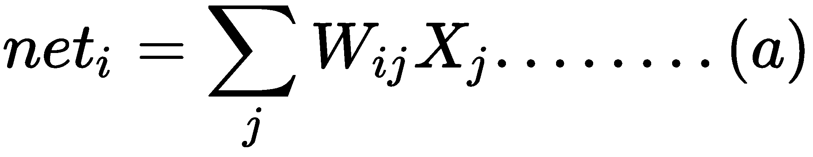
然而，在这些砝码中，还有一种特殊类型的砝码，称为偏置单元， b 。从技术上讲，偏置单元没有连接到任何先前的层，所以它们没有真正的活动。但是，bias b 值允许神经网络将激活函数向左或向右移动。考虑到偏置单元，修改后的网络输出公式如下:
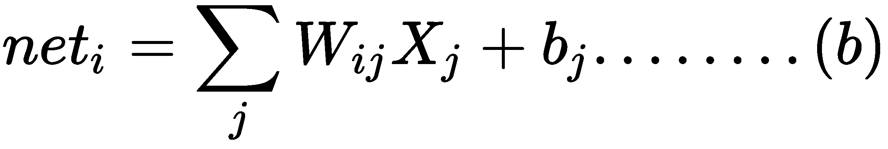
前面的等式表示每个隐藏单元得到输入的总和，乘以相应的权重——这被称为求和点。然后，求和点的合成输出通过激活功能，该功能压缩输出，如下图所示:
人工神经元模型的工作原理
然而，实际的神经网络架构由输入、隐藏和输出层组成，这些层由构成网络结构的节点组成，但仍遵循人工神经元模型的工作原理，如前图所示。输入图层仅接受数字数据，例如实数形式的要素、具有像素值的图像等:
具有一个输入层、三个隐藏层和一个输出层的神经网络
在这里，隐藏层执行大部分计算来学习模式，网络使用称为损失函数的特殊数学函数来评估其预测与实际输出相比的准确性。它可以是复杂的误差，也可以是非常简单的均方误差，定义如下:
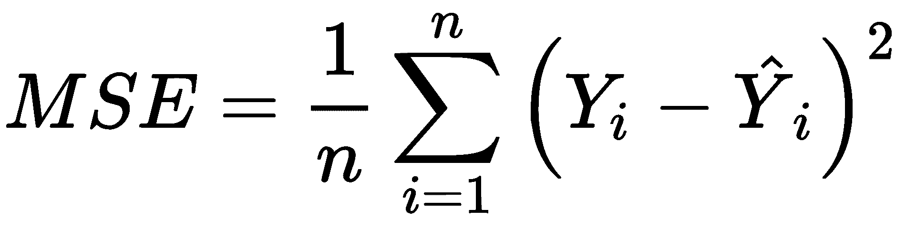
在上式中，表示网络做出的预测，而 Y 表示实际或预期输出。最后，当误差不再减小时，神经网络收敛并通过输出层进行预测。
神经网络的学习过程被配置为权重优化的迭代过程。权重在每个时期被更新。一旦训练开始，目标是通过最小化损失函数来生成预测。然后在测试集上评估网络的性能。我们已经知道了人工神经元的简单概念。然而，仅仅产生一些人工信号不足以学习一项复杂的任务。因此，一种常用的监督学习算法是反向传播算法，它非常常用于训练复杂的人工神经网络。
最终，训练这样的神经网络也是一个优化问题，其中我们试图通过迭代调整网络权重和偏差来最小化误差，通过使用通过梯度下降 ( GD )的反向传播。这种方法迫使网络回溯其所有层，以在损失函数的相反方向上更新节点间的权重和偏差。
然而，这个使用GD的过程并不能保证达到全局最小值。隐藏单元的存在和输出函数的非线性意味着误差的行为非常复杂并且具有许多局部最小值。该反向传播步骤通常使用许多训练批次执行数千次或数百万次，直到模型参数收敛到最小化成本函数的值。当验证集上的误差开始增加时，训练过程结束，因为这可能标志着阶段过度拟合的开始。
使用GD的缺点是收敛时间太长，无法满足处理大规模训练数据的需求。因此，提出了一种更快的GD，称为随机梯度下降 ( SDG )，这也是DNN训练中广泛使用的优化器。在SGD中，我们每次迭代只使用来自训练集的一个训练样本来更新网络参数，这是真实成本梯度的随机近似。
现在还有其他高级优化器，如Adam、RMSProp、ADAGrad、Momentum等等。它们都是SGD的直接或间接优化版本。
现在，这里有一个棘手的问题:我们如何初始化权重？嗯，如果我们将所有的权重初始化为相同的值(例如，0或1)，每个隐藏的神经元将获得完全相同的信号。让我们试着分解一下:
对于网络权值初始化，Xavier初始化被广泛使用。它类似于随机初始化，但通常效果更好，因为它可以根据默认输入和输出神经元的总数来确定初始化的速率。
你可能想知道在训练一个常规的DNN时是否能摆脱随机初始化。嗯，最近，一些研究人员一直在谈论随机正交矩阵初始化的性能优于任何随机初始化训练DNNs。当初始化偏差时，我们可以将它们初始化为零。
但是将偏置设置为小的恒定值，例如对于所有偏置为0.01，确保所有的整流线性单元 ( 雷鲁斯)可以传播一些梯度。然而，它既不表现良好，也没有显示出持续的改善。所以建议坚持用零。
为了允许神经网络学习复杂的决策边界，我们对它的一些层应用非线性激活函数。常用的函数包括Tanh、ReLU、softmax及其变体。更专业地说，每个神经元接收突触权重的加权和信号以及作为输入连接的神经元的激活值。为此目的最广泛使用的函数之一是所谓的sigmoid逻辑函数，其定义如下:
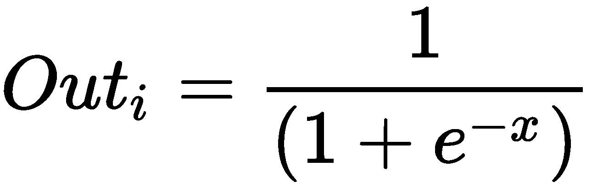
该函数的定义域包括所有实数，共定义域为(0，1)。这意味着从神经元输出的任何值(根据其激活状态的计算)将总是在0和1之间。如下图所示， Sigmoid 函数提供了对神经元饱和率的解释，从不活动(等于 0 )到完全饱和，这发生在预定的最大值(等于 1 ):
乙状结肠与双曲正切活化函数
另一方面，双曲正切，或 Tanh ，是激活函数的另一种形式。 Tanh 展平 -1 和 1 之间的一个实数值。上图显示了 Tanh 和 Sigmoid 激活功能之间的差异。特别是，在数学上， tanh 激活函数可以表示如下:
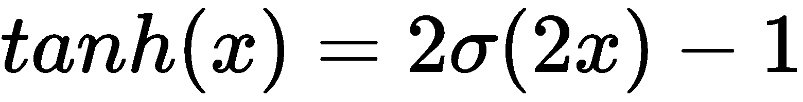
通常，在前馈神经网络 ( FFNN )的最后一级中，softmax函数被用作决策边界。这是一种常见的情况，尤其是在解决分类问题时。softmax函数用于多类别分类问题中可能类别的概率分布。
对于回归问题，我们不需要使用任何激活函数，因为网络会生成连续值，即概率。然而，我看到现在有人用身份激活函数来解决回归问题。
总之，选择合适的激活函数和网络权重初始化是使网络发挥最佳性能并帮助获得良好训练的两个问题。现在我们知道了神经网络的简史，让我们在下一节深入研究不同的架构，这将让我们对它们的用法有一个概念。
我们可以将DL架构分为四类:
然而，DNNs、CNN和RNNs有许多改进的变体。虽然大多数变体是为解决特定领域的研究问题而提出或开发的，但基本工作原理仍然遵循最初的DNN、CNN和RNN架构。以下小节将向您简要介绍这些架构。
dnn是一种神经网络，具有复杂和更深层次的架构，每层都有大量的神经元，神经元之间有许多连接。虽然DNN提到了非常深的网络，但为了简单起见，我们将MLP、堆栈自动编码器 ( SAE )和深度信念网络 ( DBNs )视为DNN架构。这些架构大多作为FFNN工作，意味着信息从输入层传播到输出层。
多个感知器堆叠在一起成为多层感知器，其中各层连接成一个有向图。基本上，MLP是最简单的FFNNs之一，因为它有三层:输入层、隐藏层和输出层。这样，信号以一种方式传播，从输入层到隐藏层，再到输出层，如下图所示:
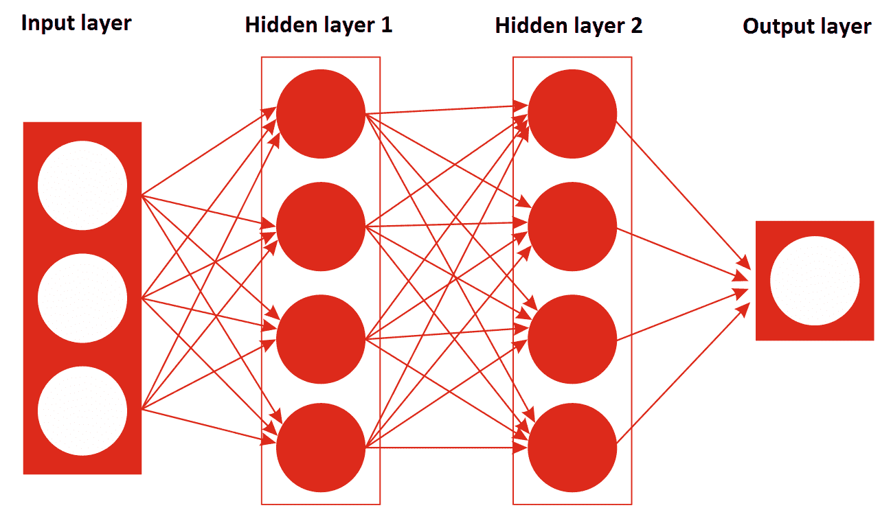
自动编码器和RBM分别是SAE和dbn的基本构件。与MLP不同，它是一种以监督方式训练的FFNN，SAE和DBNs都分两个阶段训练:无监督预训练和监督微调。在无监督的预训练中，层按顺序堆叠，并使用使用过的未标记数据以逐层方式进行训练。在监督微调中，输出分类器层被堆叠，并且通过用标记数据进行再训练来优化完整的神经网络。
MLP的一个问题是它经常过度拟合数据，所以它不能很好地概括。为了克服这个问题，Hinton 等人提出了DBN，它使用贪婪的逐层预训练算法。DBNs由一个可见层和多个隐藏单元层组成。DBN的构造块是RBM，如下图所示，其中几个RBM一个接一个地堆叠在一起:
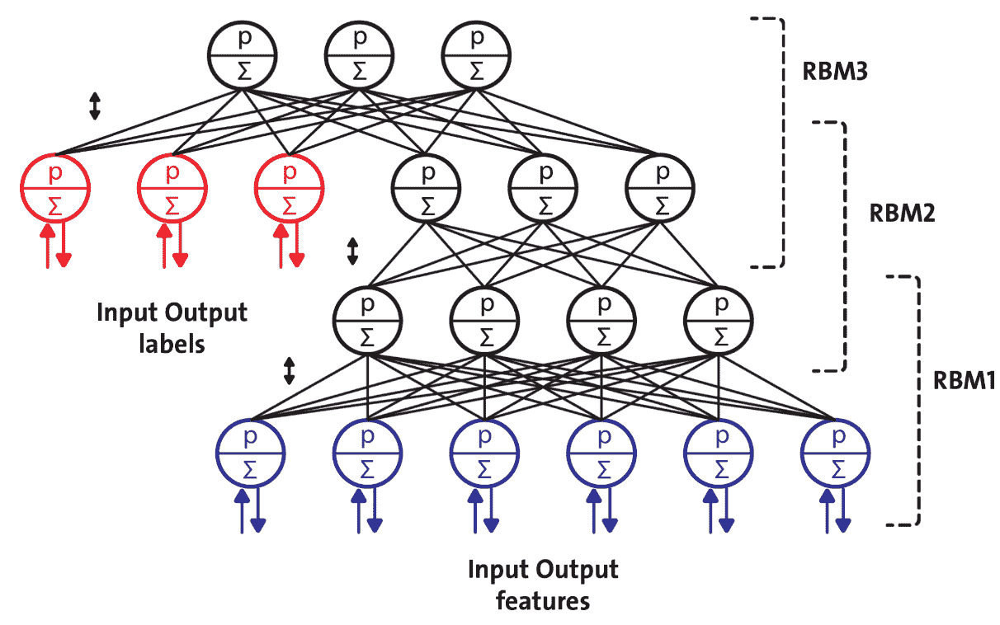
最上面的两层之间有无向对称连接，但是下面的两层有来自前一层的有向连接。尽管取得了许多成功，dbn现在正被AEs所取代。
AEs也是从输入数据中自动学习的特殊类型的神经网络。AEs由两部分组成:编码器和解码器。编码器将输入压缩成潜在空间表示。然后，解码器部分尝试从该表示中重建原始输入数据:
因此，AE可以用函数 g(f(x)) = o 来描述，其中我们希望 0 与 x 的原始输入一样接近。下图显示了AE的典型工作方式:
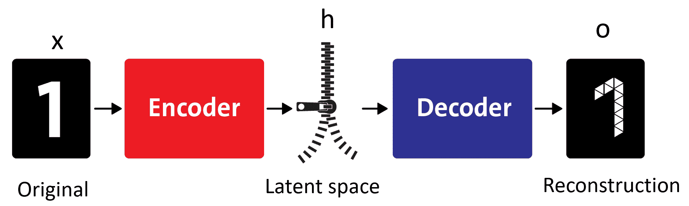
AEs在数据去噪和数据可视化的降维方面非常有用。AEs可以比PCA更有效地学习数据投影，称为表示。
CNN已经取得了很大的成就，并且在计算机视觉(例如，图像识别)中被广泛采用。在CNN网络中，连接方案与MLP或DBN相比有很大不同。一些卷积层以级联方式连接。每层都由一个ReLU层、一个池层、附加卷积层(+ReLU)和另一个池层支持，池层之后是一个全连接层和一个softmax层。下图是用于面部识别的CNN架构示意图，它将面部图像作为输入，并预测愤怒、厌恶、恐惧、快乐、悲伤等情绪。
用于面部识别的CNN的示意性架构
重要的是，dnn不知道像素是如何组织的，因为它们不知道附近的像素是接近的。CNN通过在图像的小区域中使用特征地图，使用较低层来嵌入这种先验知识，而较高层将较低层的特征组合成较大的特征。
这对于大多数自然图像都很有效，给了CNN决定性的领先优势。每个卷积层的输出是一组对象，称为特征图，由单个内核过滤器生成。然后，特征图可用于定义下一层的新输入。CNN网络中的每个神经元都会产生一个输出，后面跟着一个激活阈值，这个阈值与输入成正比，不受限制。
在RNNs中，单元之间的连接形成一个有向循环。RNN建筑最初是由Hochreiter和Schmidhuber在1997年构思的。RNN架构有标准的MLP，加上附加的环路，因此它们可以利用MLP强大的非线性映射能力。它们也有某种形式的记忆。下图显示了一个非常基本的RNN，它有一个输入层、两个递归层和一个输出层:
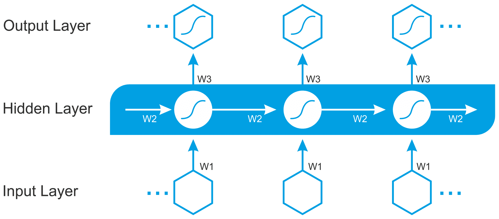
然而，这种基本的RNN受到梯度消失和爆炸问题的困扰，并且不能对长期依赖性进行建模。这些架构包括LSTM、门控循环单元 ( GRUs )、双向LSTM以及其他变体。因此，LSTM和GRU可以克服常规递归神经网络的缺点:梯度消失/爆炸问题和长短期依赖性。
Ian Goodfellow 等人在一篇名为生成对抗网络的论文中介绍了GANs(详见 https:/ / arxiv。org/abs/ 1406。2661v1 )。下图简要说明了GAN的工作原理:
GAN的工作原理
gan是深度神经网络架构，由两个网络、一个生成器和一个鉴别器组成，它们相互对立(因此得名，对立):
许多DL实践者认为GANs是最重要的进步之一，因为GANs可以用来模拟任何数据分布，并且基于数据分布，可以教会GANs创建机器人艺术家图像、超分辨率图像、文本到图像合成、音乐、语音等等。
例如，由于对抗性训练的概念，脸书的人工智能研究主任Yann LeCun将GANs称为ML过去10年中最有趣的想法。
在CNN中，每一层通过慢感受野或最大池操作在更细粒度的水平上理解图像。如果图像有旋转、倾斜或非常不同的形状或方向，CNN无法提取这样的空间信息，并且在图像处理任务中表现非常差。即使是CNN中的池操作也不能对这种位置不变性有多大帮助。CNN的这个问题通过标题为胶囊之间的动态路由的论文引导我们了解CapsNet的最新进展(详见 https:/ / arxiv。org/ abs/ 1710。09829 )作者杰弗里·辛顿等人:
胶囊是一组神经元，其活动向量代表特定类型实体(如对象或对象部分)的实例化参数
与常规的DNN不同，在CapsNets中，我们不断地添加层，这个想法是在一个层中添加更多的层。这样，顶网就是一组嵌套的神经层。在CapsNet中，使用路由算法计算胶囊的向量输入和输出，该算法迭代地传递信息并处理物理中使用的自洽场 ( SCF )过程:
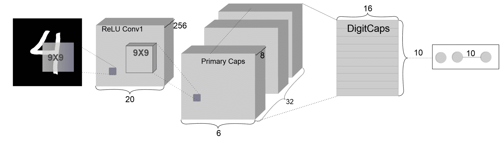
上图显示了一个简单的三层顶网的示意图。 DigiCaps 层中每个胶囊的活动向量的长度表示每个类的一个实例的存在，用于计算损失。
既然我们已经了解了神经网络的工作原理和不同的神经网络架构，那么动手实现一些东西将会很棒。然而，在此之前，我们先来看看一些流行的DL库和框架，它们是这些网络架构的实现所附带的。
有几种流行的DL框架。它们中的每一个都有一些优点和缺点。有些是基于桌面的，有些是基于云的平台，您可以在其中部署/运行您的DL应用程序。然而，大多数在开放许可下发布的库在人们使用图形处理器时会有所帮助，这最终会有助于加快学习过程。
这样的框架和库包括TensorFlow、PyTorch、Keras、Deeplearning4j、H2O以及微软认知工具包 ( CNTK )。甚至在几年前，包括Theano、Caffee和Neon在内的其他实现也被广泛使用。然而，这些现在都过时了。由于我们将专注于Scala中的学习，基于JVM的DL库如Deeplearning4j可能是一个合理的选择。deep learning 4j(DL4J)是第一个为Java和Scala构建的商业级开源分布式DL库。这也为Hadoop和Spark提供了集成支持。DL4J是为在分布式GPU和CPU上的业务环境中使用而构建的。DL4J的目标是尖端和即插即用，更多的是惯例而不是配置，这允许非研究人员快速原型制作。下图显示了去年的谷歌趋势，说明了TensorFlow有多受欢迎:
不同DL框架的趋势—TensorFlow和Keras占主导地位；然而，Theano正在失去它的受欢迎程度；另一方面，针对JVM的Deeplearning4j正在兴起
它的众多库可以与DL4J集成，并且将使您的JVM体验更容易，无论您是用Java还是Scala开发ML应用程序。与JVM的NumPy类似，ND4J提供了线性代数的基本操作(矩阵创建、加法和乘法)。但是，ND4S是一个用于线性代数和矩阵操作的科学计算库。它还为基于JVM的语言提供了n维数组。
除了前面提到的库之外，最近还有一些关于云计算的DL计划。这个想法是将DL功能引入到具有数十亿个数据点和高维数据的大数据中。例如，亚马逊网络服务 ( AWS )、微软Azure、谷歌云平台、英伟达GPU云 ( NGC )都提供了原生于其公共云的机器和DL服务。
2017年10月，AWS发布了针对亚马逊弹性计算云 ( 亚马逊EC2 ) P3实例的深度学习AMIs ( DLAMIs )。这些ami预装了DL框架，如TensorFlow、Gluon和Apache MXNet，这些框架针对亚马逊EC2 P3实例中的NVIDIA Volta V100 GPUs进行了优化。DL服务目前提供三种类型的AMI:Conda AMI、Base AMI和带源代码的AMI。
CNTK是Azure的开源DL服务。与AWS的产品类似，它专注于可以帮助开发人员构建和部署DL应用程序的工具。该工具包安装在Python 2.7的根环境中。Azure还提供了一个模型库，其中包括代码样本等资源，以帮助企业开始使用该服务。
另一方面，NGC为人工智能科学家和研究人员提供了GPU加速的容器(见https://www . NVIDIA . com/en-us/data-center/GPU-cloud-computing/)。NGC采用了容器化的深度学习框架，如TensorFlow、PyTorch、MXNet等，这些框架经过英伟达的调整、测试和认证，可以在参与云服务提供商的最新英伟达GPU上运行。然而，也有第三方服务可以通过他们各自的市场获得。
现在，您已经了解了神经网络架构的工作原理，并且已经看到了用于实现DL解决方案的可用DL框架的简要概述，让我们继续下一部分，进行一些实践学习。
大规模癌症基因组学数据通常以多平台和异构的形式出现。这些数据集在生物信息学方法和计算算法方面带来了巨大的挑战。许多研究人员已经提出利用这些数据来克服几个挑战，使用经典的ML算法作为癌症诊断和预后的主要对象或支持元素。
基因组数据涵盖了生物上所有与DNA相关的数据。虽然在这篇论文中，我们也将使用其他类型的数据，如转录组数据(RNA和miRNA)，但为了方便起见，所有数据将被称为基因组数据。由于人类基因组计划(【HGP】)(1984-2000)在人类DNA全序列测序上的成功，人类遗传学研究近年来取得了巨大突破。现在，让我们看看可以用于我们目的的真实数据集是什么样的。我们将使用基因表达癌症RNA-Seq 数据集，该数据集可以从UCI ML知识库下载(更多信息请参见https://archive . ics . UCI . edu/ML/datasets/gene+expression+cancer+RNA-Seq)。
该数据集是另一个数据集的随机子集，该数据集在以下论文中进行了报道:Weinstein，John N .，等人。癌症基因组图谱泛癌分析项目。自然遗传学45.10 (2013): 1113-1120。项目的名称是泛癌分析项目。它收集了来自数千名身体不同部位原发性肿瘤患者的数据。它涵盖了12种肿瘤类型，包括:
这个数据集合是RNA-Seq (HiSeq) PANCAN数据集的一部分。它是对患有不同类型肿瘤的患者的基因表达的随机提取:BRCA、KIRC、COAD、LUAD和PRAD。
该数据集是来自801名患者的癌症患者的随机集合，每个患者具有20，531个属性。样本(instances)按行存储。每个样品的变量(attributes)是由Illumina HiSeq平台测量的RNA-Seq基因表达水平。每个属性都有一个假名(gene_XX)。属性的排序与原始提交一致。例如，sample_0上的gene_1以2.01720929003的值显著且有差异地表达。
下载数据集时，您会看到有两个CSV文件:
让我们来看看处理过的数据集。请注意，考虑到以下屏幕截图中的高维数，我们将只查看几个精选功能，其中第一列代表样本id(即匿名患者id)。其余的列表示特定的基因表达在患者的肿瘤样品中是如何发生的:
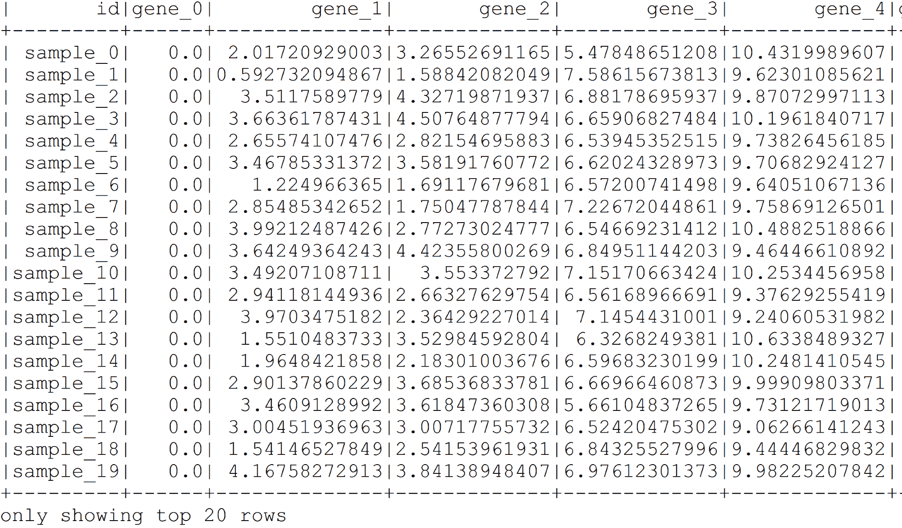
现在，看看下表中的标签。这里，id列包含样本id，Class列代表癌症标签:
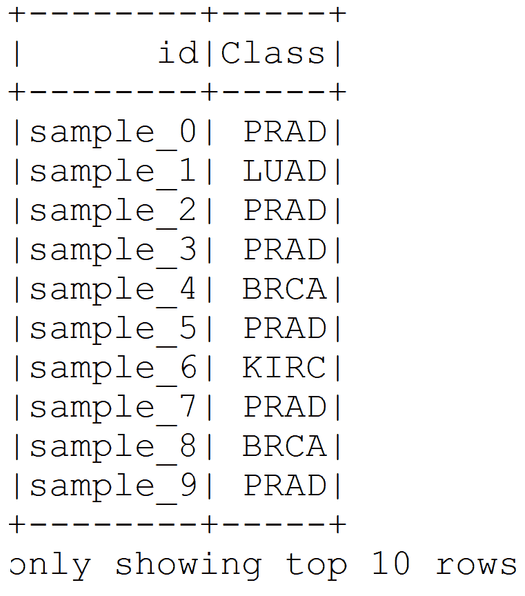
现在，你可以想象我为什么选择这个数据集。尽管我们没有很多样本，但数据集仍然是高度多维的。此外，这种类型的高维数据集非常适合应用DL算法。因此，如果给定了特征和标签，我们是否可以根据特征和地面真相对这些样本进行分类？为什么不呢？我们将尝试用DL4J库来解决这个问题。首先，我们必须配置我们的编程环境，以便我们可以编写代码。
在本节中，我们将在开始编码之前讨论如何配置DL4J、ND4s、Spark和ND4J。以下是使用DL4J时必须考虑的先决条件:
以下库可以与DJ4J集成，以增强您在开发ML应用程序时的JVM体验:
如果您在首选IDE上使用Maven，让我们定义项目属性，在pom.xml文件中提到这些版本:
<properties>
<project.build.sourceEncoding>UTF-8</project.build.sourceEncoding>
<jdk.version>1.8</jdk.version>
<spark.version>2.2.0</spark.version>
<nd4j.version>1.0.0-alpha</nd4j.version>
<dl4j.version>1.0.0-alpha</dl4j.version>
<datavec.version>1.0.0-alpha</datavec.version>
<arbiter.version>1.0.0-alpha</arbiter.version>
<logback.version>1.2.3</logback.version>
</properties>
然后，使用DL4J、ND4S和ND4J所需的所有依赖项，如pom.xml文件所示。对了，DL4J自带Spark 2.1.0。此外，如果您的计算机上没有配置本机系统BLAS，ND4J的性能将会降低。一旦您执行任何用Scala编写的简单代码，您将会遇到以下警告:
****************************************************************
WARNING: COULD NOT LOAD NATIVE SYSTEM BLAS
ND4J performance WILL be reduced
****************************************************************
然而，安装和配置BLAS，如OpenBLAS或IntelMKL，并不困难；你可以投入一些时间去做。有关详细信息，请参考以下URL:
http://nd4j.org/getstarted.html#open
干得好！我们的编程环境已经为简单的DL应用程序开发做好了准备。现在，是时候使用一些示例代码了。
由于我们没有任何未标记的数据，我想随机选择一些样本进行测试。还有一点需要注意的是，要素和标注位于两个独立的文件中。因此，我们可以执行必要的预处理，然后将它们连接在一起，这样预处理后的数据将同时具有要素和标注。
然后，其余的数据将用于训练。最后，我们将把训练集和测试集保存在一个单独的CSV文件中，供以后使用。按照以下步骤开始:
val data = spark.read.option("maxColumns", 25000).format("com.databricks.spark.csv")
.option("header", "true") // Use first line of all files as header
.option("inferSchema", "true") // Automatically infer data types
.load("TCGA-PANCAN/TCGA-PANCAN-HiSeq-801x20531/data.csv");// set this path accordingly
val numFeatures = data.columns.length
val numSamples = data.count()
println("Number of features: " + numFeatures)
println("Number of samples: " + numSamples)
因此，有来自801不同患者的801个样本，数据集的维度太高，因为它具有20532个特征:
Number of features: 20532
Number of samples: 801
val numericDF = data.drop("id") // now 20531 features left
val labels = spark.read.format("com.databricks.spark.csv")
.option("header", "true")
.option("inferSchema", "true")
.load("TCGA-PANCAN/TCGA-PANCAN-HiSeq-801x20531/labels.csv")
labels.show(10)
我们已经看到了标签数据帧的样子。我们将跳过id。然而，Class列是绝对的。正如我们前面提到的，DL4J不支持需要预测的分类标签。因此，我们必须将其转换为数字格式(更具体地说，是整数)；为此，我会使用Spark的StringIndexer():
val indexer = new StringIndexer().setInputCol("Class")
.setOutputCol("label")
.setHandleInvalid("skip"); // skip null/invalid values
val indexedDF = indexer.fit(labels).transform(labels)
.select(col("label")
.cast(DataTypes.IntegerType)); // casting data types to integer
indexedDF.show()
前面的代码行应该将label列转换为数字格式:
val combinedDF = numericDF.join(indexedDF)
val splits = combinedDF.randomSplit(Array(0.7, 0.3), 12345L) //70% for training, 30% for testing
val trainingDF = splits(0)
val testDF = splits(1)
println(trainingDF.count())// number of samples in training set
println(testDF.count())// number of samples in test set
trainingDF.coalesce(1).write
.format("com.databricks.spark.csv")
.option("header", "false")
.option("delimiter", ",")
.save("output/TCGA_train.csv")
testDF.coalesce(1).write
.format("com.databricks.spark.csv")
.option("header", "false")
.option("delimiter", ",")
.save("output/TCGA_test.csv")
Spark将在项目根目录下的output文件夹下生成CSV文件。但是，您可能会看到一个非常不同的名称。我建议您分别为训练集和测试集将它们重命名为TCGA_train.csv和TCGA_test.csv。
考虑到高维数，我宁愿尝试更好的网络，如LSTM，这是RNN的改进版本。在这一点上，关于LSTM的一些上下文信息将有助于理解这一思想，并将在下一节之后提供。
在上一节中，我们准备了训练集和测试集。然而，我们需要付出一些额外的努力，使它们可以被DL4J使用。更具体地说，DL4J期望数字格式的训练数据和最后一列是label列。剩下的数据应该是特征。
我们现在将尝试像那样准备我们的训练和测试集。首先，我们将找到保存训练集和测试集的文件:
// Show data paths
val trainPath = "TCGA-PANCAN/TCGA_train.csv"
val testPath = "TCGA-PANCAN/TCGA_test.csv"
然后，我们将定义所需的参数，例如特性的数量、类的数量和批量大小。这里，我使用128作为batchSize，但是你可以相应地调整它:
// Preparing training and test set.
val labelIndex = 20531
val numClasses = 5
val batchSize = 128
该数据集用于训练:
val trainingDataIt: DataSetIterator = readCSVDataset(trainPath, batchSize, labelIndex, numClasses)
这是我们想要分类的数据:
val testDataIt: DataSetIterator = readCSVDataset(testPath, batchSize, labelIndex, numClasses)
从前面两行代码中可以看出，readCSVDataset()基本上是一个读取CSV格式数据的包装器，然后RecordReaderDataSetIterator()方法将记录读取器转换为数据集迭代器。
用DL4J创建神经网络从MultiLayerConfiguration开始，它组织网络层及其超参数。然后，使用NeuralNetConfiguration.Builder()界面添加创建的层。如下图所示，LSTM网络由五层组成:输入层，其后是三个LSTM层。最后一个图层是RNN图层，在本例中也是输出图层:
用于癌症类型预测的LSTM网络，采用20，531个特征和固定偏差(即1)并生成多类输出
为了创建LSTM层，DL4J提供了一个LSTM类的实现。然而，在我们开始为网络创建层之前，让我们定义一些超参数，例如输入/隐藏/输出节点(神经元)的数量:
// Network hyperparameters
val numInputs = labelIndex
val numOutputs = numClasses
val numHiddenNodes = 5000
然后，我们通过指定图层来创建网络。第一、第二和第三层是LSTM层。最后一层是RNN层。对于所有隐藏的LSTM层，我们指定输入和输出单元的数量，并使用ReLU作为激活函数。然而，由于这是一个多类分类问题，我们使用SOFTMAX作为输出图层的activation函数，使用MCXNET作为损失函数:
//First LSTM layer
val layer_0 = new LSTM.Builder()
.nIn(numInputs)
.nOut(numHiddenNodes)
.activation(Activation.RELU)
.build()
//Second LSTM layer
val layer_1 = new LSTM.Builder()
.nIn(numHiddenNodes)
.nOut(numHiddenNodes)
.activation(Activation.RELU)
.build()
//Third LSTM layer
val layer_2 = new LSTM.Builder()
.nIn(numHiddenNodes)
.nOut(numHiddenNodes)
.activation(Activation.RELU)
.build()
//RNN output layer
val layer_3 = new RnnOutputLayer.Builder()
.activation(Activation.SOFTMAX)
.lossFunction(LossFunction.MCXENT)
.nIn(numHiddenNodes)
.nOut(numOutputs)
.build()
在前面的代码块中，softmax activation函数给出了类的概率分布，MCXENT是多类分类设置中的交叉熵损失函数。
然后，使用DL4J，我们使用NeuralNetConfiguration.Builder()接口添加之前创建的层。首先，我们添加所有的LSTM图层，然后是最终的RNN输出图层:
//Create network configuration and conduct network training
val LSTMconf: MultiLayerConfiguration = new NeuralNetConfiguration.Builder()
.seed(seed) //Random number generator seed for improved repeatability. Optional.
.optimizationAlgo(OptimizationAlgorithm.STOCHASTIC_GRADIENT_DESCENT)
.weightInit(WeightInit.XAVIER)
.updater(new Adam(5e-3))
.l2(1e-5)
.list()
.layer(0, layer_0)
.layer(1, layer_1)
.layer(2, layer_2)
.layer(3, layer_3)
.pretrain(false).backprop(true).build()
在前面的代码块中，我们使用SGD作为优化器，它试图优化MCXNET损失函数。然后，我们使用XAVIER初始化网络权重，而Adam作为SGD的网络更新器。最后，我们使用前面的多层配置初始化多层网络:
val model: MultiLayerNetwork = new MultiLayerNetwork(LSTMconf)
model.init()
此外，我们可以检查跨层和整个网络中超参数的数量。通常，这种类型的网络有许多超参数。让我们打印网络中的参数数量(以及每一层):
//print the score with every 1 iteration
model.setListeners(new ScoreIterationListener(1))
//Print the number of parameters in the network (and for each layer)
val layers = model.getLayers()
var totalNumParams = 0
var i = 0
for (i <- 0 to layers.length-1) {
val nParams = layers(i).numParams()
println("Number of parameters in layer " + i + ": " + nParams)
totalNumParams = totalNumParams + nParams
}
println("Total number of network parameters: " + totalNumParams)
上述代码的输出如下:
Number of parameters in layer 0: 510640000
Number of parameters in layer 1: 200020000
Number of parameters in layer 2: 200020000
Number of parameters in layer 3: 25005
Total number of network parameters: 910705005
正如我之前所说的，我们的网络有9.1亿个参数，这是非常庞大的。在优化超参数时，这也是一个巨大的挑战。
首先，我们将使用前面的MultiLayerConfiguration创建一个MultiLayerNetwork。然后，我们将初始化网络，并在训练集上开始训练:
var j = 0
println("Train model....")
for (j <- 0 to numEpochs-1) {
model.fit(trainingDataIt)
最后，我们还指定不需要做任何预训练(这在DBN或堆栈式自动编码器中通常是需要的)。
培训完成后，下一个任务是评估模型，我们将在这里的测试集上进行评估。对于评估，我们将使用Evaluation()方法。这个方法创建了一个包含五个可能的类的评估对象。
首先，让我们对每个测试样本进行迭代评估，并从训练好的模型中获得网络预测。最后，eval()方法对照真实类检查预测:
println("Evaluate model....")
val eval: Evaluation = new Evaluation(5) //create an evaluation object with 5 possible classes
while (testDataIt.hasNext()) {
val next:DataSet = testDataIt.next()
val output:INDArray = model.output(next.getFeatureMatrix()) //get the networks prediction
eval.eval(next.getLabels(), output) //check the prediction against the true class
}
println(eval.stats())
println("****************Example finished********************")
}
以下是输出:
==========================Scores========================================
# of classes: 5
Accuracy: 0.9900
Precision: 0.9952
Recall: 0.9824
F1 Score: 0.9886
Precision, recall & F1: macro-averaged (equally weighted avg. of 5 classes)
========================================================================
****************Example finished******************
哇！难以置信！我们的LSTM网络已经准确地对样本进行了分类。最后，让我们看看分类器如何预测每个类别:
Actual label 0 predicted by the model as 0: 82 times
Actual label 1 predicted by the model as 0: 1 times
Actual label 1 predicted by the model as 1: 17 times
Actual label 2 predicted by the model as 2: 35 times
Actual label 3 predicted by the model as 0: 1 times
Actual label 3 predicted by the model as 3: 30 times
使用LSTM预测癌症类型的预测准确性可疑地更高，不是吗？我们的模型不合适吗？我们的模型过度拟合了吗？
由于我们的准确度可疑地更高，我们可以观察训练进行得如何。是的，有办法发现它是否过拟合，因为我们可以在DL4J UI上观察训练、验证和测试损失。不过，这里就不讨论细节了。看看https://deep learning 4j . org/docs/latest/deep learning 4j-nn-visualization了解更多关于如何做的信息。
在这一章中，我们看到了如何从TCGA收集的非常高维的基因表达数据集中，根据肿瘤类型对癌症患者进行分类。我们的LSTM架构成功实现了99%的准确率，这是非常出色的。尽管如此，我们讨论了DL4J的许多方面，这将在接下来的章节中有所帮助。最后，我们看到了与本项目、LSTM网络和DL4J超参数/网络调整相关的一些常见问题的答案。
这或多或少是我们使用Scala和不同开源框架开发ML项目的小小旅程的结束。在这些章节中，我试图为你提供几个例子，告诉你如何有效地使用这些美妙的技术来开发ML项目。在写这本书的时候，我不得不在脑海中保留许多约束；比如页数，API可用性，当然还有我的专业知识。
然而，总的来说，我试图通过避免不必要的理论细节来使这本书简单，因为你可以在许多书籍、博客和网站上读到这一点。我还会在GitHub知识库上保持这本书的代码更新，网址是https://GitHub . com/packt publishing/Machine-Learning-with-Scala-Quick-Start-Guide。随时打开一个新的问题或任何拉请求，以改善代码，并保持关注。
尽管如此，我将把解决方案作为Zeppelin笔记本上传到每一章，这样您就可以交互式地运行代码。顺便说一下，Zeppelin是一款基于网络的笔记本，支持数据驱动、交互式数据分析以及使用SQL和Scala的协作文档。一旦您在首选平台上配置了Zeppelin，您就可以从GitHub资源库下载笔记本，将它们导入Zeppelin，然后开始使用。更多的细节，你可以看看https://zeppelin.apache.org/的。